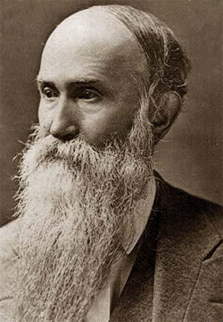
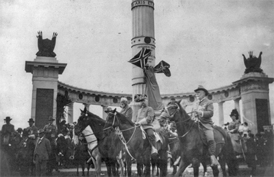

|
The phrase "The Lost Cause" refers to an ideology that developed among
white Southerners in the last decades of the nineteenth century and
continued through the First World War. Although the South had
decisively lost the Civil War, in the years after defeat, Southerners
began to look back on the War years nostalgically and to celebrate them
as the years of the South's greatest glory. This romanticization of the
Confederacy was expressed in an outpouring of sentimental literature,
memoirs, and historical accounts, as well as in numerous monuments and
public ceremonies.
Although the roots of the Lost Cause can be traced back to the war
and its immediate aftermath, the first formal organizations did not
emerge until the 1870s. In that decade, a group of Virginia elites and
|

Jubal A. Early
|
military leaders centered on General Jubal A. Early founded such
organizations as the Association of the Army of Northern Virginia and
the Southern Historical Society. There they developed a justification
for the South's defeat which glorified Southern military leaders,
particularly Robert E. Lee, and argued that the Civil War had been lost
not because of a lack of will or insufficient military acumen but simply
because Southern forces had been overwhelmingly outnumbered. Thus,
defeat thus involved no shame or dishonor. In fact, the Southern cause
remained a noble one, irremediably doomed from the start, but for that
very reason, all the more heroic.
During the 1880s and 1890s the beliefs of the Lost Cause spread far
beyond the circle of elites who had originally propounded it. The United
Confederate Veterans (1889), the United Daughters of the Confederacy
(1894), and the sons of the Confederate Veterans (1896) were led by
elites, but included large numbers of white members from less exclusive
backgrounds. Its monthly publication, the Confederate Veteran, was
directed toward a popular audience and offered accounts of the
experiences of common soldiers. Moreover, even white Southerners who
did not belong to a Lost Cause organization or subscribe to its
publications participated in the general enthusiasm for the vanished
Confederacy by attending the monument dedications, public ceremonies,
and museums sponsored by the Daughters of the Confederacy. Yet, however
many Southerners participated in Lost Cause activities, the overall
purpose of such activities was decidedly exclusionary. Although during
the conflict itself Southerners had freely acknowledged that the Civil
War was a struggle over slavery, under the Lost Cause the South's
defense of slavery was conveniently transformed into a defense of
"state's rights."
Though the Lost Cause was celebrated most vehemently in the South,
its effects extended well beyond the Mason-Dixon line. The veterans'
reunions, which began in the 1880s, brought white veterans from both
North and South together in celebration of a newly discovered
|

A veterans parade in front of a memorial to Jefferson
Davis. Confederate soldiers, Confederate battle flags, and Jefferson Davis
were all crucial elements of the Lost Cause ideology.
|
camaraderie that strove to recognize both sides as somehow "right" and
erased references to slavery even as black soldiers were excluded from
the reunions themselves. Nor was the celebration of the Southern cause
confined to commemorations of the battlefield. The novels of Thomas
Nelson Page, for example, sold widely in both North and South and
disseminated an escapist image of an idyllic prewar South in which
masters were unfailingly benevolent and slaves unceasingly loyal.
It is perhaps tempting to dismiss the Lost Cause as simply a trivial
and misplaced nostalgia. However, it is also worth noting that it has
had enduring political consequences. The legacy has persisted through
to our own time, for example, in the continuing popularity of Gone with
the Wind. Nowhere is that legacy more evident than in the ongoing
struggle over the display of the Confederate flag. For it was during
the years of the Lost Cause that what might have become merely a
historical artifact was reinstated as an object of passionate devotion.
And it was also in those years that the flag's racist meanings were
suppressed. Those who demand that the Confederate flag be flown above
state capitol buildings as a symbol of "state's rights" are heir to a
century-old ideology which systematically denied what that flag meant
during the Civil War itself and indeed the very reasons the War was
fought at all.
Source: Joan Waugh, ed., Facts on File Encyclopedia of American
History: Civil War and Reconstruction, 1856 to 1869 (New York: Facts on
File, 2003), 217-18.
|